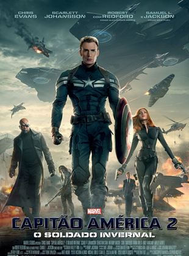
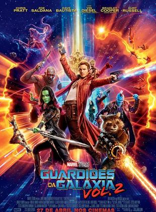
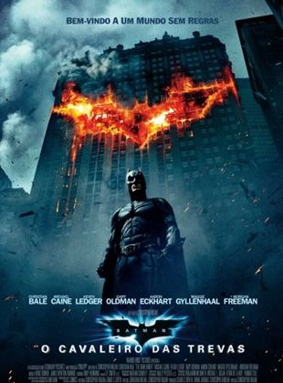

The Batman - 2022
Capitão America e o Soldado Invernal
Guardiões da Galaxia Vol. 2
Batman Cavaleiro das Trevas
Interestelar
The Batman - 2022

Sinópse:
Batman (The Batman, no original) segue o segundo ano de Bruce Wayne (Robert Pattinson)
como o herói de Gotham, causando medo nos corações dos criminosos da sombria cidade. Com apenas
alguns aliados de confiança - Alfred Pennyworth (Andy Serkis) e o tenente James
Gordon (Jeffrey Wright) - entre a rede corrupta de funcionários e figuras importantes do
distrito, o vigilante solitário se estabeleceu como a única personificação da vingança entre
seus concidadãos. Durante uma de suas investigações, Bruce acaba envolvendo a si mesmo e Gordon
em um jogo de gato e rato, ao investigar uma série de maquinações sádicas em uma trilha de pistas
enigmáticas estabelecida pelo vilão Charada. Quando o trabalho acaba o levando a descobrir uma onda
de corrupção que envolve o nome de sua família, pondo em risco a própria integridade e as memórias
que tinha sobre seu pai, Thomas Wayne, as evidências começam a chegar mais perto de casa,
precisando, Batman, forjar novos relacionamentos, para assim desmascarar o culpado e fazer justiça ao
abuso de poder e à corrupção que há muito tempo assola Gotham City.
Capitão América e o Soldado Invernal

Sinópse:
Dois anos após os acontecimentos em Nova York (Os Vingadores - The Avengers), Steve Rogers
(Chris Evans) continua seu dedicado trabalho com a agência S.H.I.E.L.D. e também segue tentando
se acostumar com o fato de que foi descongelado e acordou décadas depois de seu tempo.
Em parceria com Natasha Romanoff (Scarlett Johansson), também conhecida como Viúva Negra, ele
é obrigado a enfrentar um poderoso e misterioso inimigo chamado Soldado Invernal, que visita
Washington e abala o dia a dia da S.H.I.E.L.D., ainda liderada por Nick Fury (Samuel L. Jackson).
Guardiões da Galaxia Vol. 2

Sinópse:
Agora já conhecidos como os Guardiões da Galáxia, os guerreiros viajam ao longo do cosmos
e lutam para manter sua nova família unida. Enquanto isso tentam desvendar os mistérios da
verdadeira paternidade de Peter Quill (Chris Pratt).
Batman Cavaleiro das Trevas

Sinópse:
Após dois anos desde o surgimento do Batman (Christian Bale), os criminosos de Gotham City
têm muito o que temer. Com a ajuda do tenente James Gordon (Gary Oldman) e do promotor
público Harvey Dent (Aaron Eckhart), Batman luta contra o crime organizado. Acuados com o
combate, os chefes do crime aceitam a proposta feita pelo Coringa (Heath Ledger) e o contratam
para combater o Homem-Morcego.
Interestelar

Sinópse:
Após ver a Terra consumindo boa parte de suas reservas naturais, um grupo de astronautas recebe
a missão de verificar possíveis planetas para receberem a população mundial, possibilitando a
continuação da espécie. Cooper (Matthew McConaughey) é chamado para liderar o grupo e aceita a missão
sabendo que pode nunca mais ver os filhos. Ao lado de Brand (Anne Hathaway), Jenkins (Marlon Sanders) e
Doyle (Wes Bentley), ele seguirá em busca de uma nova casa. Com o passar dos anos, sua filha
Murph (Mackenzie Foy e Jessica Chastain) investirá numa própria jornada para também tentar salvar a
população do planeta.